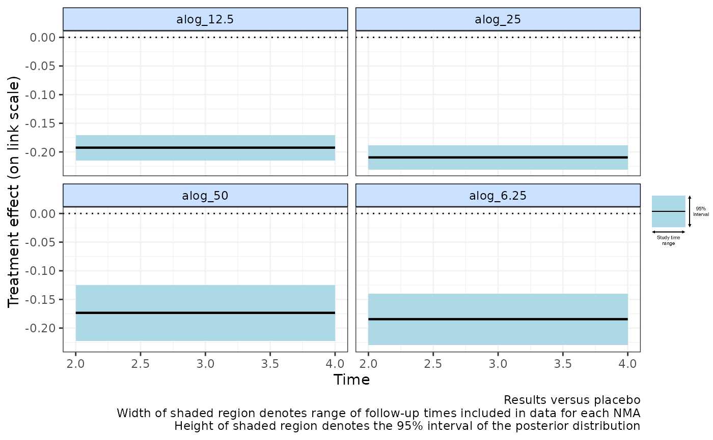
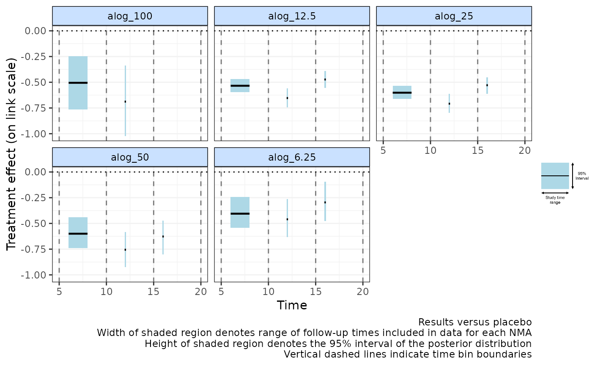

Plot relative effects from NMAs performed at multiple time-bins
binplot.RdPlot relative effects from NMAs performed at multiple time-bins
Arguments
- network
An object of class
"mb.network".- overlay.nma
Numeric vector used to overlay the results from a standard NMA model that "lumps" time-points together within the time bin ranges specified in
overlay.nma. The numbers inoverlay.nmadefine the boundaries of the time bins within which to perform a standard NMA. Length must be >=2, or can be left asNULL(the default) to indicate that no NMA should be perfomed.overlay.nmacan only be specified ifoverlay.ref==TRUE. See Details for further information.- method
Can take
"common"or"random"to indicate the type of NMA model used to synthesise data points given inoverlay.nma. The default is"random"since this assumes different time-points inoverlay.nmahave been lumped together to estimate the NMA.- link
Can take either
"identity"(the default),"log"(for modelling Ratios of Means friedrich2011MBNMAtime) or"smd"(for modelling Standardised Mean Differences - although this also corresponds to an identity link function).- lim
Specifies calculation of either 95% credible intervals (
lim="cred") or 95% prediction intervals (lim="pred").- plot.bins
Plot time bin boundaries as vertical dashed lines. Setting
plot.bins=TRUEifoverlay.nmais specified also sets x-axis ticks to time bin boundaries automatically.- legend
TRUE/FALSEto indicate whether a legend should be plotted.- ...
Arguments to be sent to R2jags.
Value
Plots treatment effects from NMAs performed within discrete time bins. The
object returned is a list containing the plot and a sublist of NMA results and
predictions from each time bin specified in overlay.nma.
Details
Performs several standard NMAs at different time "bins", time periods within which treatment effects are assumed to be constant over time. Separate NMAs are then performed within each time bin on data points from studies that fall within the time bin (only a single follow-up time is taken from each study to avoid double counting).
Note that the wider the time bin boundaries specified by the user, the larger the potential range of included follow-up times and this can introduce heterogeneity or inconsistency.
Results are plotted versus the network reference and are plotted on the
specified link scale. Each time bin window is marked on the plot by
vertical dashed lines. The NMA estimates within each time bin are plotted
as a horizontal solid black line (the posterior median) with a shaded region
indicating the 95% credible interval (prediction intervals can instead
be plotted). The width of these shaded regions is equal to the range of study
time-points included in the NMA performed within that timebin, which
may therefore be more narrow than the time bin specified in the binplot()
command due to the follow-up times at which data is available in included
studies.
Overlaying NMA results
overlay.nma indicates regions of the data (defined as "time bins") over which it may be reasonable to "lump" different
follow-up times from different studies together and assume a standard NMA model. For example:
overlay.nma=c(5,10)indicates a single NMA of studies with follow-up times>5and<=10overlay.nma=c(5,10,15)indicates two NMAs should be performed of studies with follow-up times>5and<=10of studies with follow-up times>10and<=15
When used with MBNMA (via predict.mbnma()) this allows comparison to MBNMA results over a specific range of time within each time bin.
It can be useful to assess which time-course function might be suitable when using binplot(), or to
to assess if the MBNMA predictions are in agreement with predictions from an NMA model when using plot.mb.predict()
for a specific range of time-points. This can be a general indicator of the fit of the time-course model.
However, it is important to note that the wider the range specified in overlay.nma, the more likely it is that different time-points
are included, and therefore that there is greater heterogeneity/inconsistency in the NMA model. If overlay.nma includes
several follow-up times for any study then only a single time-point will be taken (the one closest to mean(overlay.nma)).
The NMA predictions are plotted over the range specified in overlay.nma as a horizontal line, with the 95%CrI shown by a grey
rectangle. The NMA predictions represent those for any time-points within this range since they lump together data at
all these time-points. Predictions for treatments that are disconnected from
the network reference treatment at data points specified within overlay.nma cannot be estimated so are not included.
It is important to note that the NMA model is not necessarily the "correct" model, since it "lumps" different time-points
together and ignores potential differences in treatment effects that may arise from this. The wider the range specified in
overlay.nma, the greater the effect of "lumping" and the stronger the assumption of similarity between studies.
For an NMA model to be estimated and a corresponding prediction to be made from it, each time bin must include the network reference treatment (treatment=1) evaluated in at least 1 connected study in the time bin. If a given time bin does not meet this criteria then an NMA will not be calculated for it.
Examples
# \donttest{
# Create an mb.network object from a dataset
alognet <- mb.network(alog_pcfb)
#> Reference treatment is `placebo`
#> Studies reporting change from baseline automatically identified from the data
# Plot relative effects from NMAs calculated for a single time-bins
# Do not plot time-bin boundaries
binplot(alognet, overlay.nma=c(0,5), plot.bins=FALSE)
#> Running overlay.nma for time=0 and time=5
#> Compiling model graph
#> Resolving undeclared variables
#> Allocating nodes
#> Graph information:
#> Observed stochastic nodes: 32
#> Unobserved stochastic nodes: 14
#> Total graph size: 307
#>
#> Initializing model
#>

# Plot relative effects from NMAs at multiple time-bins
# With random treatment effects
binplot(alognet, overlay.nma=c(5,10,15,20),
method="random")
#> Running overlay.nma for time=5 and time=10
#> Compiling model graph
#> Resolving undeclared variables
#> Allocating nodes
#> Graph information:
#> Observed stochastic nodes: 42
#> Unobserved stochastic nodes: 48
#> Total graph size: 580
#>
#> Initializing model
#>
#> Running overlay.nma for time=10 and time=15
#> Compiling model graph
#> Resolving undeclared variables
#> Allocating nodes
#> Graph information:
#> Observed stochastic nodes: 46
#> Unobserved stochastic nodes: 52
#> Total graph size: 641
#>
#> Initializing model
#>
#> Running overlay.nma for time=15 and time=20
#> Compiling model graph
#> Resolving undeclared variables
#> Allocating nodes
#> Graph information:
#> Observed stochastic nodes: 23
#> Unobserved stochastic nodes: 28
#> Total graph size: 321
#>
#> Initializing model
#>

# }